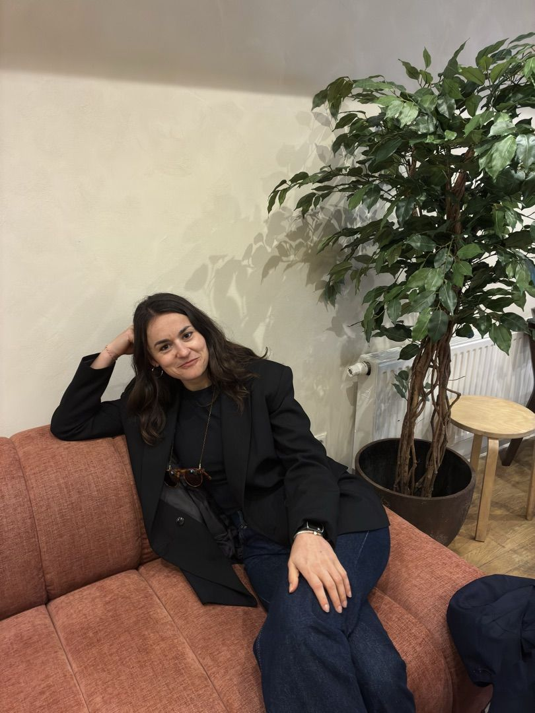
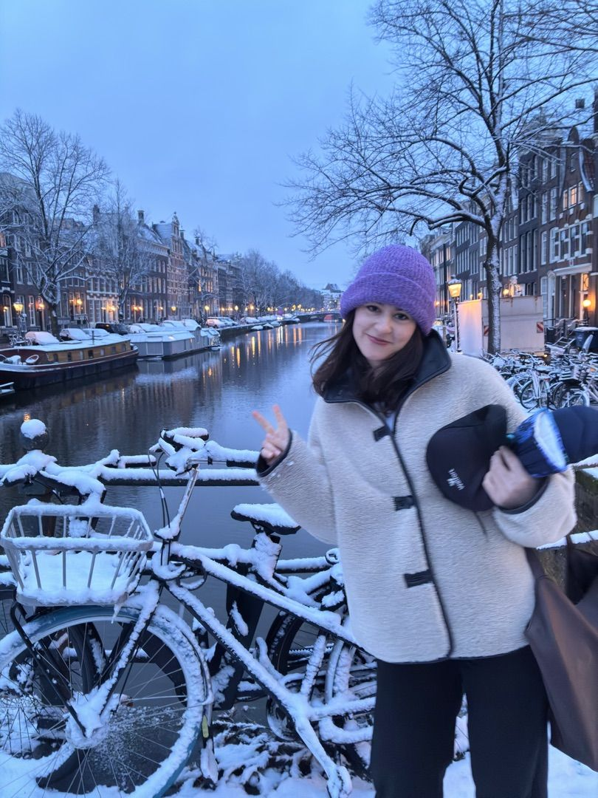
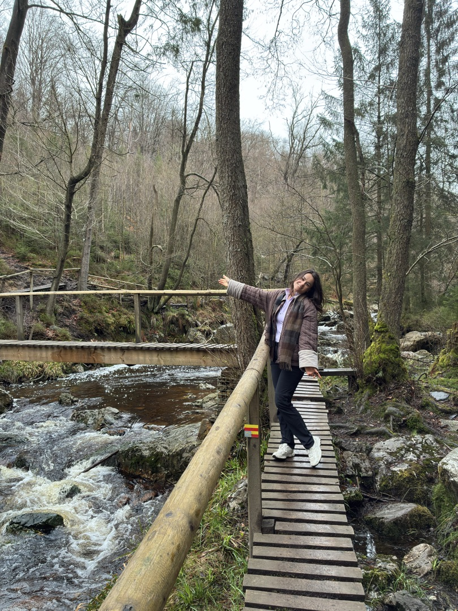
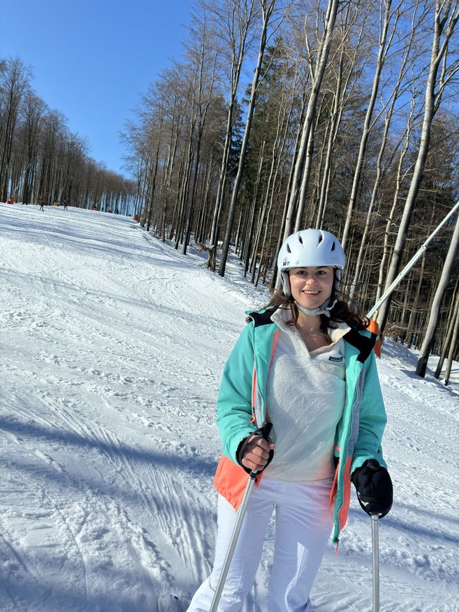
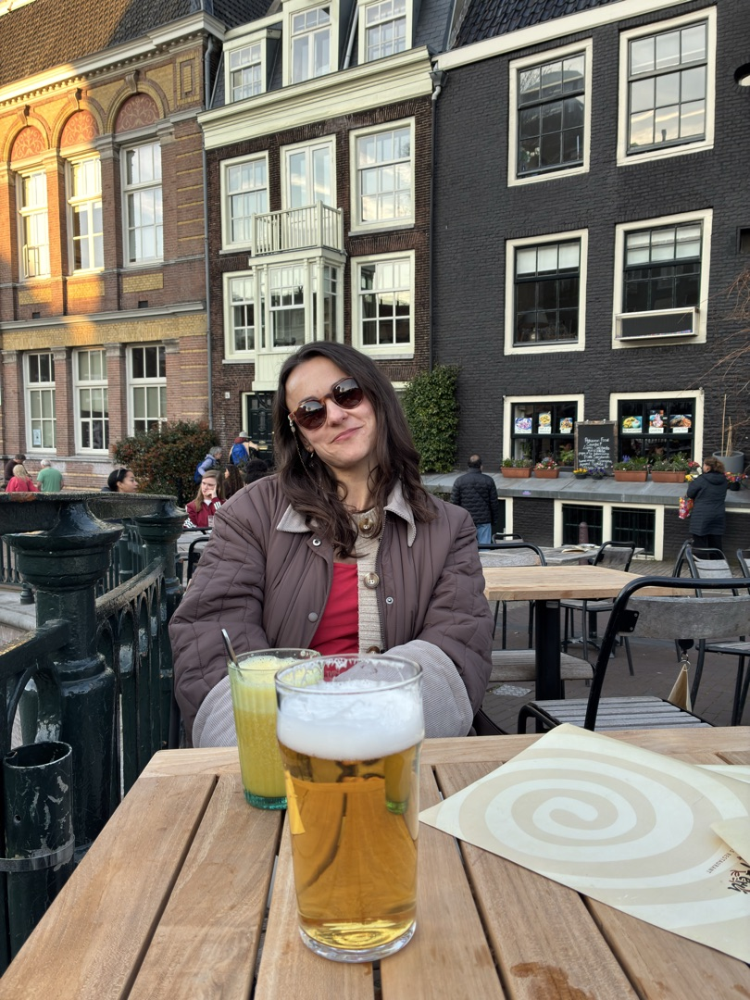
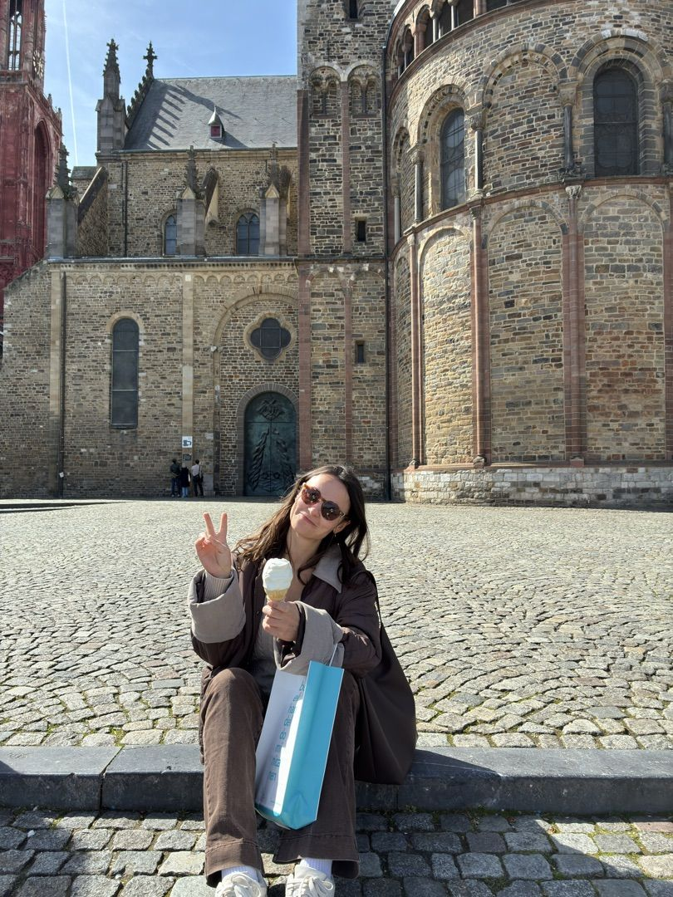
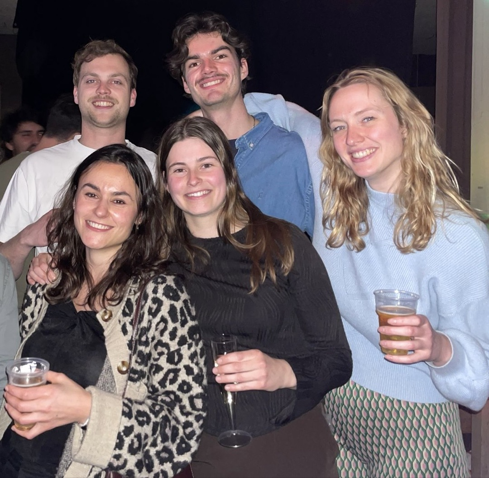

Beyond the Lab
Life Outside
the Pipette
Science is what I do — but it's not all of who I am. Here's the rest: the trails, the slopes, the canals, and the people who make it worthwhile.

Growing up between Greece and Albania, then studying across Germany and the Netherlands, movement has always been part of my life — both the literal kind and the geographic kind. I've lived in Munich for six years and now call Amsterdam home.
Outside the lab I run, ski, hike, and travel as often as I can. There's something about physical effort in a beautiful landscape that gives the mind exactly the reset it needs.
Amsterdam in particular has a way of making everyday life feel like an adventure — whether it's the first snowfall on the canals, a terrace beer in the golden hour, or a spontaneous weekend trip somewhere with good cobblestones and better ice cream.
This page exists because science is a human endeavour. These photos are a small window into the human behind the research.







Running
A reliable way to think through a hard problem. Race days included.
Mountains & Trails
Hiking and skiing — the outdoors as reset button and perspective machine.
Travel
Four countries of education, countless detours. Always curious what's around the next corner.
Community
From Munich lab mates to Amsterdam friends — good science needs good people.
Reading
Papers by day, everything else by night. Fiction, biographies, and the occasional rabbit hole.
Languages
Greek, Albanian, English, German — and Italian somewhere in between. Each one a different way of thinking.